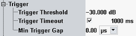

The "Trigger" parameters configure the trigger system for the "LR-WPAN Multi-Evaluation" measurement. The measurement is triggered by the power ramp of the received signal.

Defines the input signal power where the trigger condition is satisfied and a trigger event is generated. The trigger threshold is valid for power trigger sources. It is a dB value, relative to the reference level minus the external attenuation (<Ref. Level> – <External Attenuation (Input)> – <Frequency Dependent External Attenuation>). If the reference level equals the maximum output power of the DUT and the external attenuation settings are correct, the trigger threshold is relative to the maximum input power.
A low threshold can be required to ensure that the R&S CMW can always detect the input signal. A higher threshold can prevent unintended trigger events.
Sets a time after which an initiated measurement must have received a trigger event. If no trigger event is received, a trigger timeout is indicated in manual operation mode. In remote control mode, the measurement is automatically stopped.
Remote command:Defines a minimum duration of the power-down periods (gaps) between two triggered power pulses.
- At the IF power-down ramp of each triggered or untriggered pulse, even though the previous counter may not have elapsed yet. A power-down ramp is detected when the signal power falls below the trigger threshold.
- At the beginning of each measurement: The minimum gap defines the minimum time between the start of the measurement and the first trigger event.
The trigger system is rearmed as soon as the timer has reached the specified minimum gap.

The "Minimum Trigger Gap" separates any two consecutive measurements by a minimum number of timeslots.
Remote command: